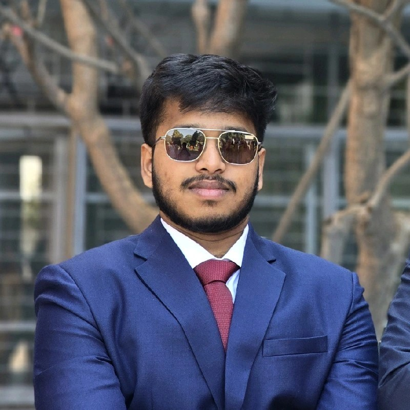

About Me

I'm a dedicated mechanical engineering student at BITS Pilani with expertise in CAD design and Simulations. Driven by a deep passion for hypersonics with a dedicated goal of becoming an aerospace engineer.
Education
- Bachelor of Engineering in Mechanical Engineering, BITS Pilani (GPA: 9.08/10)
Technical Skills
- Designing: Creo Parametric, Solidworks, Fusion 360, AutoCAD, OpenVSP, Altair Inspire
- Simulation: Ansys Structural, Ansys Fluent, OpenFOAM, Basilisk C, Simscale
- Others: Matlab, Simulink, C Programming, Ardupilot